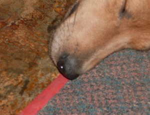
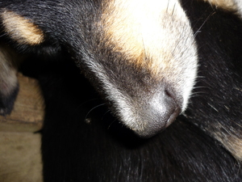

irung  
/ʔiduŋ/
n.
“nose”
1.
n.
nose
Wrd.Gloss: nose
Ka seini ne lalag iyan sika se egbayaan te nguwug ne egkehalan te kalungat, wey ke eggeheyinawa ki diyè egbayè ka kalamag.
Malayat ka irung din su mig-iling ma te iney rin.
She has a long nose because she inherit her mother.
Syn. barengus
Eng. nose
Tag. ilóng
Ceb. ilong
Ilo.: agóng
Tigwanon: ʔidung
Binukid: ʔidung
Tagbawa: ʔidung
Cotabato Manobo: ʔidung
Tasaday: ʔidung
Sarangani: ʔidong
WBM: ʔizung
Ilianen: ngirung
Cagayano: ʔirung
Kinamigin: ʔirung
Obo: ʔirung
Proto: ʔidung
OCM: Ethnoanatomy (826)
DDP: Nose (2.1.1.3)
Online dict status: -
Usage level: F
2.
v.
for the rice plant (eg-irungan, in-irungan/mig-irungan/pig-irungan, theme, eg><an-) to have flesh of the grains
Eng. flesh, to have (grains)
Online dict status: -
Usage level: R
3.
n.
the point of a knife
Genr. ugpit
Eng. point; tip
Ref.Gloss: bolo
OCM: General Tools (412)
Online dict status: -
Usage level: B
Updated by: RJH,AAA,QDL,RJH,QDL
Last updated: 10/Mar/2014
"irung" in healthbook "Egbuween wey egnguwehen si Lukas"
This page last updated: 28-Dec-2019
Copyright © 2009-2014, Matigsalug Language Christian Association, Inc